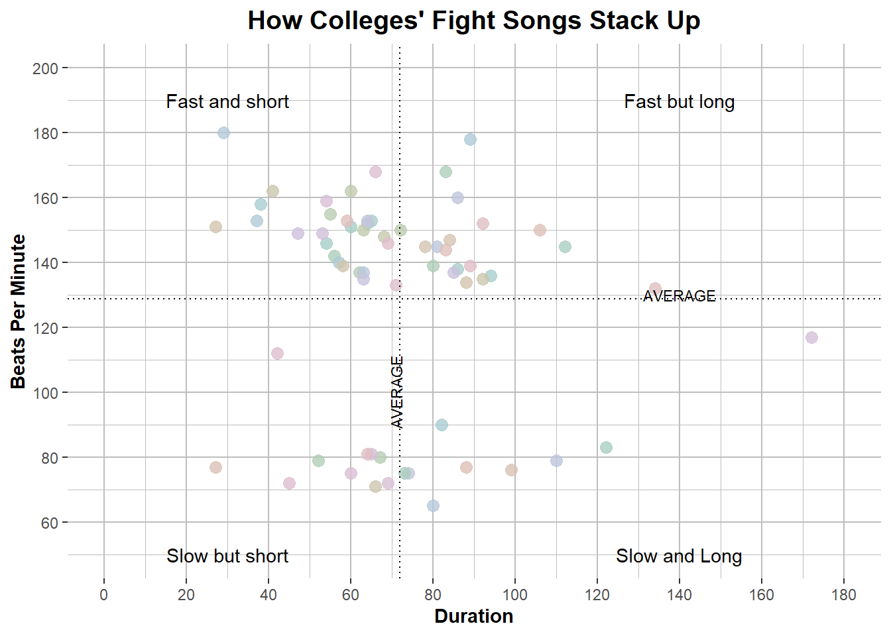

The graph I settled on to replicate plots different colleges’ fight songs by duration in seconds and beats per minute. I found this graph on fivethiryeight.com at this link https://projects.fivethirtyeight.com/college-fight-song-lyrics/ and the raw data at this link https://github.com/fivethirtyeight/data/tree/master/fight-songs. Here is a quick screenshot of the original graph since it is slightly interactive, but if you would like to view it in its full glory then check out the link above.
Attaching package: 'plotly'
The following object is masked from 'package:ggplot2':
last_plot
The following object is masked from 'package:stats':
filter
The following object is masked from 'package:graphics':
layout
library(shiny)
Load in data
fight <-read_csv("data/fight-songs.csv")
Rows: 65 Columns: 23
── Column specification ────────────────────────────────────────────────────────
Delimiter: ","
chr (19): school, conference, song_name, writers, year, student_writer, offi...
dbl (4): bpm, sec_duration, number_fights, trope_count
ℹ Use `spec()` to retrieve the full column specification for this data.
ℹ Specify the column types or set `show_col_types = FALSE` to quiet this message.
Plotting
##create the plot with parameters and average linesPlot1 <-ggplot(fight, aes(x=sec_duration, y=bpm, col=school, text=paste(school, "<br>")))+geom_point(size=3, alpha=0.8)+xlab("Duration")+ylab("Beats Per Minute")+geom_hline(yintercept =mean(fight$bpm, na.rm=TRUE), lty='dotted')+geom_vline(xintercept=mean(fight$sec_duration, na.rm=TRUE), lty='dotted')+scale_colour_hue(c=20, l=80)+theme(legend.position="none")+scale_x_continuous(limits=c(0,180), breaks =seq(0,180,20))+scale_y_continuous(limits=c(50,200), breaks=c(0,60,80,100,120,140,160,180,200))+theme(axis.title.y =element_text(face="bold", size=11), plot.title =element_text(face="bold", size=14.5, hjust=0.5), axis.title.x =element_text(face="bold", size=11))+ggtitle("How Colleges' Fight Songs Stack Up")+annotate("text", x =140, y =190, label ="Fast but long")+annotate("text", x =30, y =190, label ="Fast and short")+annotate("text", x =30, y =50, label ="Slow but short")+annotate("text", x =140, y =50, label ="Slow and Long")+theme(panel.background =element_rect(fill ='white'),panel.grid.major =element_line(color ='grey'),panel.grid.minor =element_line(color ='grey'))+annotate("text", x=140, y=130, label="AVERAGE", size=3)+annotate("text", x=71, y=100, label="AVERAGE", angle=90, size=3)Plot1

I started with plotting the basic parameters and then started tweaking things to make them more similar to the original. I started with the point size and transparency, then added axis labels and the average lines for bpm and duration. I altered the scale of both axes, added the title, changed the font, and added quadrant labels as well. Lastly I changed the background grid to how the original looked. As I was going along, I would view the graph and see how it was looking, then add to the code. I can see how this may be harder to follow than if I broke it down into separate steps.
Adding the Hovering Text Box
##create the hover text boxggplotly(Plot1, tooltip =c("text"))
Comments
Stackoverflow was my best friend during this process and I would’ve been lost without it. I came into this exercise with a basic understanding of making plots but I didn’t know all the ways to customize the different aspects of a graph or any sort of interactive elements, and it was my first time trying to use ggplotly. I definitely learned a ton of details for personalization and formatting which took the majority of the time I spent on it. I had a difficult time figuring out what color palette was used in the original so I settled for the default colors which were fairly similar. I also couldn’t figure out how to add the labels of ‘AVERAGE’ within the dotted average lines I made, so I just added them adjacent to the lines. This was defintely a challenge but I feel like I learned a lot and found a bunch of new resources I can turn to in the future.